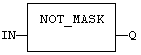
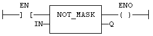

Function
Performs a bit to bit negation of an integer value.
|
Name |
Type |
Description |
|
IN |
ANY |
Integer input. |
|
Name |
Type |
Description |
|
Q |
ANY |
Bit to bit negation of the input. |
Arguments can be signed or unsigned integers from 8 to 32 bits.
In LD language, the input rung (EN) enables the operation, and the output rung keeps the same value as the input rung. In IL language, the parameter (IN) must be loaded in the current result before calling the function.
Q := NOT_MASK (IN);

The function is executed only if EN is TRUE.
ENO is equal to EN.
